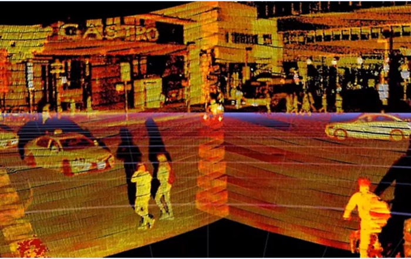

-

Ansys 與 Innoviz Technologies 合作，透過下一代光學雷達設計，推動自動駕駛新革命
2021-05-05
重點摘要• Ansys 的產品組合提供了全面的解決方案，協助開發複雜的微型機電光學雷達系統。
• Ansys 工具協助 Innoviz Technologies 在一年半內將產品開發時間縮短了兩個完整設計週期，顯 著地降低成本。
賓夕法尼亞州，匹茲堡， 2022 年 1 月 4 日 – Innoviz Technologies 使用 Ansys (NASDAQ: ANSS) 模擬解決方案，成功地推動其獨特的汽車級光學雷達感應器技術，並為他們的客戶實現自動駕駛，且同時降低開發時間與成本。Ansys技術使 Innoviz Technologies滿足客戶對光學雷達設計的耐用性、可靠性和經濟性的需求，且緊密整合至Level 3-5的自動駕駛汽車中。
美國交通部國家公路交通安全管理局的一項 研究 發現，大多數嚴重車禍是由人為疏忽所造成的，這一統計數據驅動自動駕駛汽車的開發，以提升道路安全性。自動駕駛汽車仰賴各種組件的感應能力，包括光學雷達、雷達和照相機。光學雷達提供高畫質圖像、遠距離 3D 圖像感知，以安全引導車輛移動。汽車製造商面臨的挑戰是，現行可用的光學雷達在性能、尺寸、可靠性和成本方面無法滿足產業標準。而在組裝過程中，因這些高度複雜光學感應器與眾多系統相連，使得其生產和作業中都面臨挑戰。
進行光學雷達設計和光學各個方面的模擬和測試，促使該團隊邁向成功。借助 Ansys 多物理場的強大功能，Innoviz 依靠 Ansys® Mechanical™, Ansys® Fluent®, Zemax 和 Ansys® Maxwell® 模擬軟體相互間緊密地協作，成功解決了開發光學雷達系統的複雜性。透過廣泛的模擬和測試，實現了將多個組件整合至單個晶片中，且以最少的設計迭代開發出更輕巧的光學雷達系統。這種高性能、可靠的光學雷達解決方案可滿足製造商對必要汽車性能特徵與尺寸的要求，且在價格上也相對延伸閱讀高度複雜光學感應器與眾多系統相連
包括光學雷達、雷達和照相機。光學雷達提供高畫質圖像、遠距離3D圖像感知，以安全引導車輛移動。汽車製造商面臨的挑戰是，現行可用的光學雷達在性能...
高度複雜光學感應器與眾多系統相連
包括光學雷達、雷達和照相機。光學雷達提供高畫質圖像、遠距離3D圖像感知，以安全引導車輛移動。汽車製造商面臨的挑戰是，現行可用的光學雷達在性能...